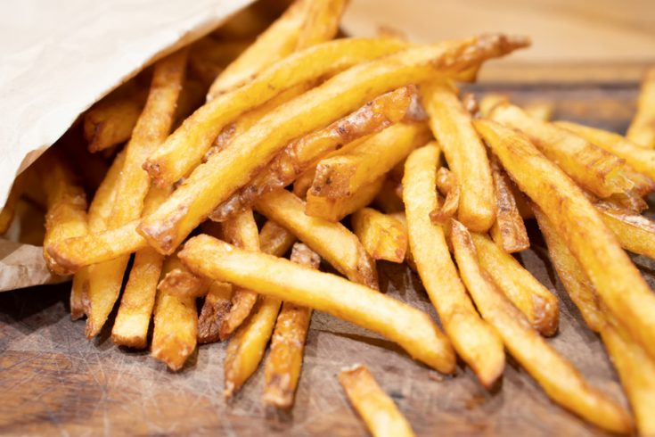

Homemade French Fries

Description:
Crispy, golden French fries made right at home! Follow this simple recipe to enjoy the perfect side dish or snack.
With a crunchy exterior and fluffy interior, these fries are irresistible.
Ingredients
- 4 large russet potatoes
- Vegetable oil for frying
- Salt to taste
- Optional: ketchup or your favorite dipping sauce
Instructions:
- Prepare the Potatoes:
- Wash and peel the potatoes (or leave the skin on for a rustic touch).
- Cut the potatoes into uniform, matchstick-sized pieces (about 1/4-inch thick).
- Rinse and Soak:
- Place the cut potatoes in a bowl of cold water. Let them soak for at least 30 minutes
(or up to 2 hours) to remove excess starch.
- Heat the Oil:
- In a deep fryer or large, heavy-bottomed pot, heat vegetable oil to 350-375°F (175-190°C).
Use enough oil to fully submerge the potatoes.
- Dry the potatoes:
- Drain the soaked potatoes and pat them dry with paper towels to remove excess moisture.
- Fry the Potatoes:
Carefully add a batch of the dried potato sticks to the hot oil. Fry until they are golden brown
and crispy, about 3-4 minutes per batch.
Use a slotted spoon to remove the fries from the oil and place them on a paper towel-lined plate to drain.
Sprinkle with salt immediately while they're hot.
Repeat the frying process with the remaining potatoes.
- Serve:
Serve your homemade French fries hot and crispy. Pair them with ketchup or your favorite dipping sauce for
an extra burst of flavor.
Indulge in the satisfaction of these homemade French fries, crispy on the outside and tender on the inside.
They're the perfect accompaniment to any meal or a delightful snack all on their own!
go back to main page